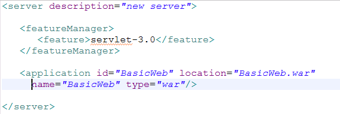

What is the Liberty profile? What does it do? Why is it so wonderful? Ian Robinson, WebSphere Foundation Chief Architect, explains all…
When I choose a tool for any kind of job, there are around three questions I usually consider:
- Is this going to be able to do the job?
- Is this the easiest way to do it?
- Do I like using it?
For many years now we’ve provided a functionally rich set of application development tools for WebSphere Application Server, with deeply integrated support for testing and debugging on WAS. Fidelity between the test and production environments is assured through having a full edition of WAS as the test environment (a server type, in Eclipse terms) integrated in Rational Application Developer. This passes the test posed by question #1 with flying colors.
In the WebSphere and Rational teams, we’ve been thinking about question #2 for a while and have been working towards providing the simplest, best and most easily accessible environment for developers to create new web applications for WAS.
WAS V8.5 introduces the new WAS “Liberty” Profile, which we think answers all three questions with a resounding Yes!
So what is the WAS Liberty profile and how does it do this?
At its heart, the Liberty profile is a dynamic profile of WAS that enables the WAS server to provision only the features required by the application (or set of applications) deployed to the server. If an application requires just a servlet engine, then all that starts is the WAS kernel, the HTTP transport and the web container. Which is lightening fast to bring up (a few seconds) and has an incredibly small
footprint. Need a JPA provider to access relational data? No need to go hunting around to find one, just add in the JPA feature and persistence configuration and we’ll switch that on. Dynamically. Even though the server only takes you a few seconds to restart, you don’t have to. Which is important in a development environment, as you build up the capabilities of an application, modify classes, add resources and fix problems. Developers need code and configuration changes to be easy to make and reflected immediately in the test environment. This is as easy as it gets with the combination of the WAS Liberty Profile and the new WAS Developer Tools.
WAS Developer Tools
Something developers have been asking about for a while now is availability of the most common RAD tools as a standalone feature that can be added to Eclipse. This is exactly what the WAS Developer Tools for Eclipse (WDT) are intended to be – and available for free Рwith a focus on Java EE web and mobile tools and integration of the WAS Liberty profile for the debug/test server environment. Developers can now develop, assemble, test and publish web applications using lightweight tools to a lightweight runtime which has fidelity to the full WAS profile. And, starting with WAS V8.5, we’re adding Mac as a development environment on which the WAS Liberty profile can run.
Development Simplicity
Lets go back to my question #2: “is this the easiest way to do the job?”. The lightweight tools and runtime are important for iterative compile-edit-debug, so we’re off to a good start. Fidelity of the unit/functional test environment with the production server environment simplifies continuous integration into pre-production and production systems. But while you’re still in the development environment, you want the simplest way possible to configure that test server – for example to define resources the application may need, such as datasources.
Beyond its focus on minimizing footprint and startup time, the WAS Liberty profile provides a new and development-centric approach to configuring the server. Configuration is through a simple XML file which is easy to author, maintain in a version control system, share across and between development team, and diff for changes. Ultimately, we have made the server configuration for the WAS Liberty profile a development artifact. The most basic configuration for a Liberty profile server with a simple web app deployed looks like this:
{kind=link}

The set of features in <featureManager> listed describes the concrete profile for the configured server instance and is tailored for the application(s) deployed to the server. Internally, features are a discrete set of JARs (actually OSGi bundles) that are initialized as soon as they are added to the configuration. In this case the BasicWeb app requires only the servlet-3.0 feature so this is all the Liberty kernel will start. This is the same servlet container that runs on the full WAS profile, just without everything else. Liberty profile configurations are dynamic and are monitored by the runtime, so if features or applications are updated the runtime dynamically reacts to these changes without requiring a server restart.
Applications typically use resources that require some configuration so lets look at a datasource configuration snippet:

The “jdbc-4.0” and elements can be added straight into the server.xml above for the simplest configuration. More complex applications may be developed by teams who divide ownership and maintainence of different parts of the application and different parts of the configuration. Flexible configuration is supported through a logical composite spanning multiple configuration files related through includes. So the above datasource configuration snippet can be maintained separately from the main server.xml and simply included by it:

Installing the WAS Liberty Profile and WDT couldn’t be easier – just go to Downloads. Here you can download the WAS Liberty Profile on its own – It only takes a few seconds.
Or, from this page, you can learn how add WDT as an Eclipse feature to your Eclipse environment and use WDT to install the WAS Liberty Profile server type for debug and test. WDT and the WAS Liberty profile provide the easiest way to develop web applications for WebSphere. Going back to the last of my three questions…do I like using it? I do – but we’d like to know what you think.
Give it a try, and use the WASdev community to let us know what you think.
How can we handle the Asychronous Beans when we migrate from WAS Full Profile to Liberty Profile?
Hi Arslan,
Can you post the question to the answers forum here please: https://developer.ibm.com/answers/smartspace/wasdev/
Thanks,
Tom
Very Interesting and I’d like too use it in development environment.To avoid install of Full Was Profile.
Two questions:
Are ejb supported?
Can we migrate the liberty profile to full profile when going to Integration and Production environment?Are there any facilities to do this?
Thank you!
Yes – for the current V8.5.5 release take a look here for the ejbLite-3.1 and mdb-3.1 features, samples and config snippets:
https://developer.ibm.com/wasdev/downloads/#filter/sortby=relevance;q=ejb%20mdb
The current Beta also has an early version of the ejb-3.2 feature.
Hi,
Are ejb supported?
EJB3.x is supported. EJB 2.x and older are not supported in Liberty Profile. Chances are you would not be using them but in case you are using EJB 2.x or earlier then WLP is not going to be of help to you
Can we migrate the liberty profile to full profile when going to Integration and Production environment?Are there any facilities to do this?
Why would you want to migrate the Liberty profile?
Full Fidelity is provided. In other words, the applications that run on the Liberty profile would demonstrate the same behaviour in Full Profiles. Use the Full Profiles in your Integration and production environments and roll out your apps tested on WLP to these environments.
The ejb-3.2 feature in the Beta adds support for EJB 2.x components – so WLP will also be able to run older EJB 2.x components when that feature graduates from Beta.
WLP can be used as both a development environment and a production environment. As you say, there is no application migration required when using WLP as a dev environment for WAS full profile.
Really cool… WAS ad libitum… like real – creative, pleasurful – life.